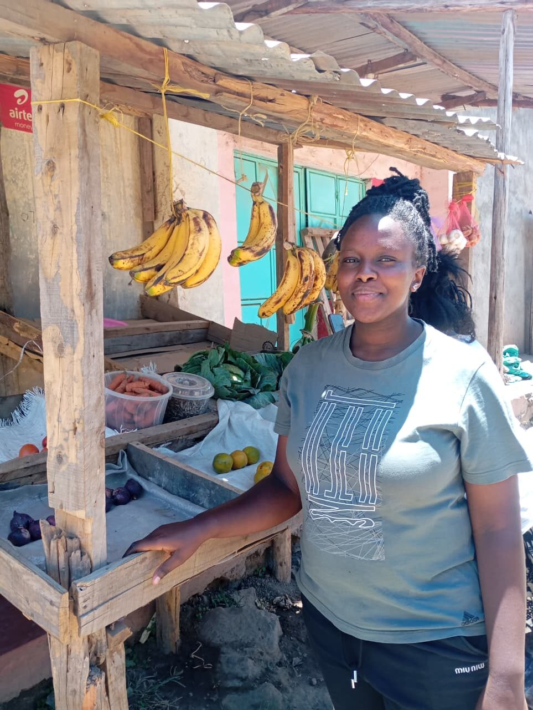
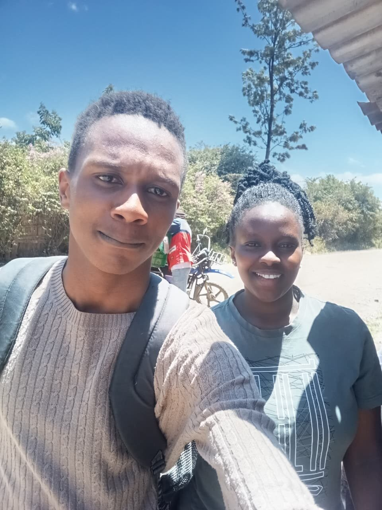

What Grace Wanjeri Wants to Know Before the Produce Arrives
Grace Wanjeri sells fresh produce from a stall in Subukia. Her biggest daily problem isn't selling it — it's not knowing, ahead of time, what condition it will be in when it gets to her.

Photo / Field Documentation — George Ngugi. Grace Wanjeri, produce trader, Subukia.Grace Wanjeri's stall sits under a corrugated iron roof, bananas hanging from a crossbeam, carrots and onions laid out on a cloth below. It's a small operation, and like most produce stalls, its entire day depends on something Grace doesn't fully control: what condition her stock is in by the time it reaches her.
She was direct about the problem when I asked. Getting produce that's actually ready — properly ripe, not still days away, not already past its best — is a recurring difficulty. She doesn't grow what she sells; she depends on what arrives, and what arrives isn't always what she needs on a given day.
That's what led the conversation toward GreenTrack. I asked what would actually help, and Grace didn't hesitate: she wanted to know if there was a way to see harvest data — information about a crop before it showed up at her stall, rather than finding out its condition only once it was already in front of her.
A trader's biggest risk isn't a bad harvest. It's an unpredictable one — stock that arrives without any warning of what state it's actually in.
I explained what GreenTrack logs on the grower's side — planting dates, expected harvest windows, recorded yields — and how that same record could, in principle, travel forward with the produce instead of stopping at the farm gate. Grace listened closely, and it was clear the idea landed: not as an abstract feature, but as a direct answer to something she deals with every day. She seemed genuinely interested in the possibility of seeing that information before stock reached her, rather than after.
It's a small conversation, but it points to something GreenTrack hasn't fully solved yet: the record a farmer keeps is only useful to a trader like Grace if it doesn't stop being useful the moment the harvest leaves the field. Right now, that's exactly where it stops.

Grace Wanjeri, with George NgugiGrace's stall doesn't change because of one conversation. But the gap she named — not knowing what's coming until it's already arrived — is a real, practical version of the same "market access" problem that's come up elsewhere in this research. It just looks different from a trader's side of the counter than it does from a farmer's.
- Traders face the same information gap as farmers — just from the other end of the supply chain
- Interest in harvest data being visible before produce physically arrives, not just after
- A reminder that a farmer's record only helps as far as it actually travels